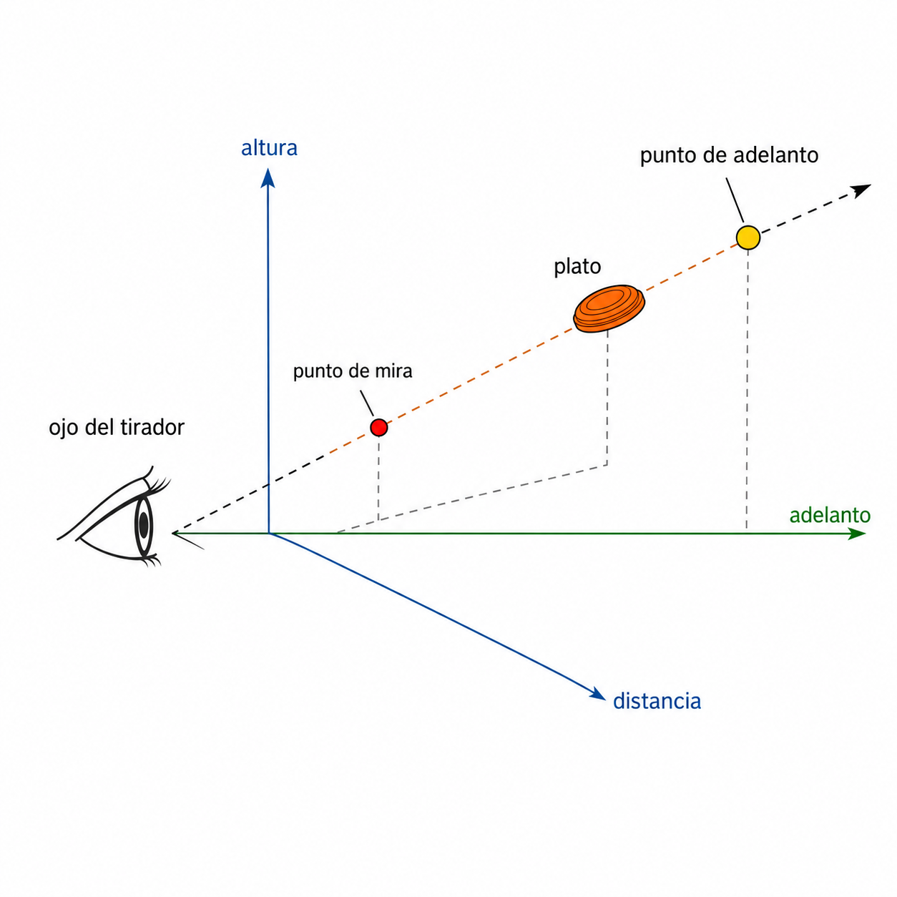
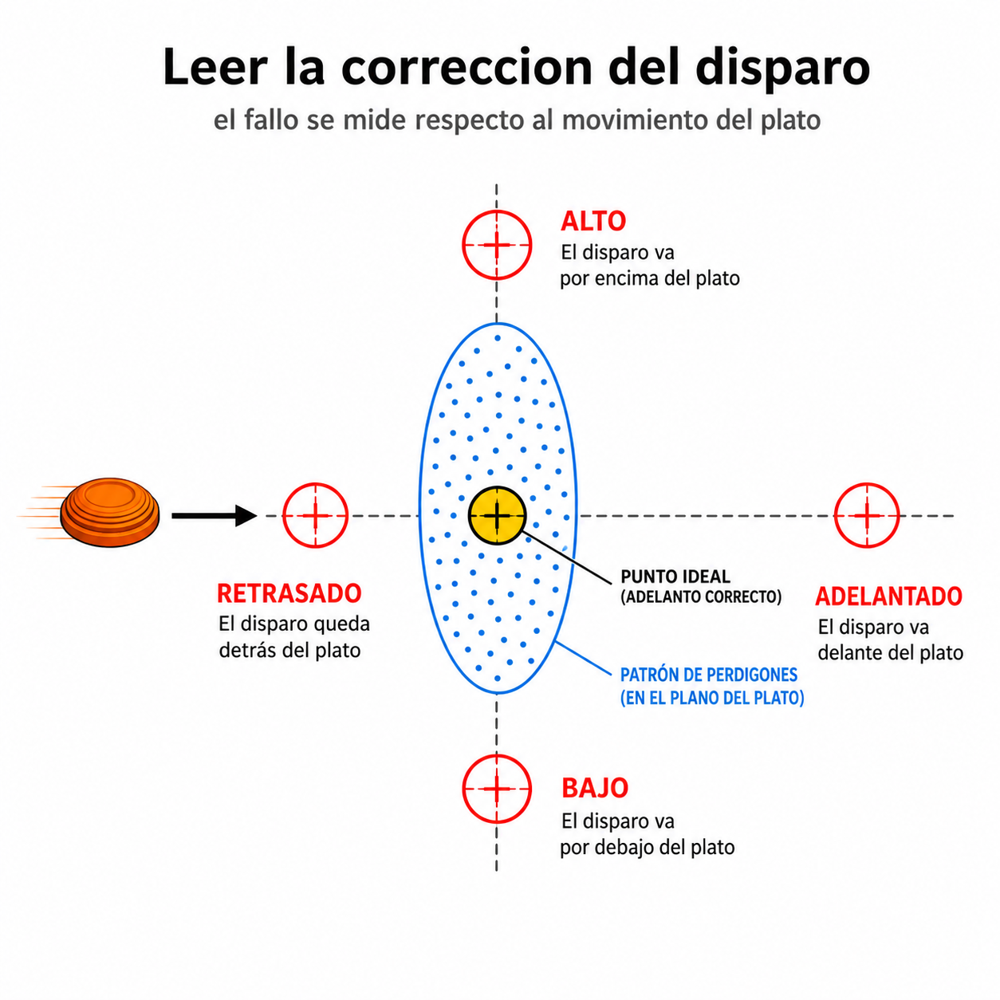
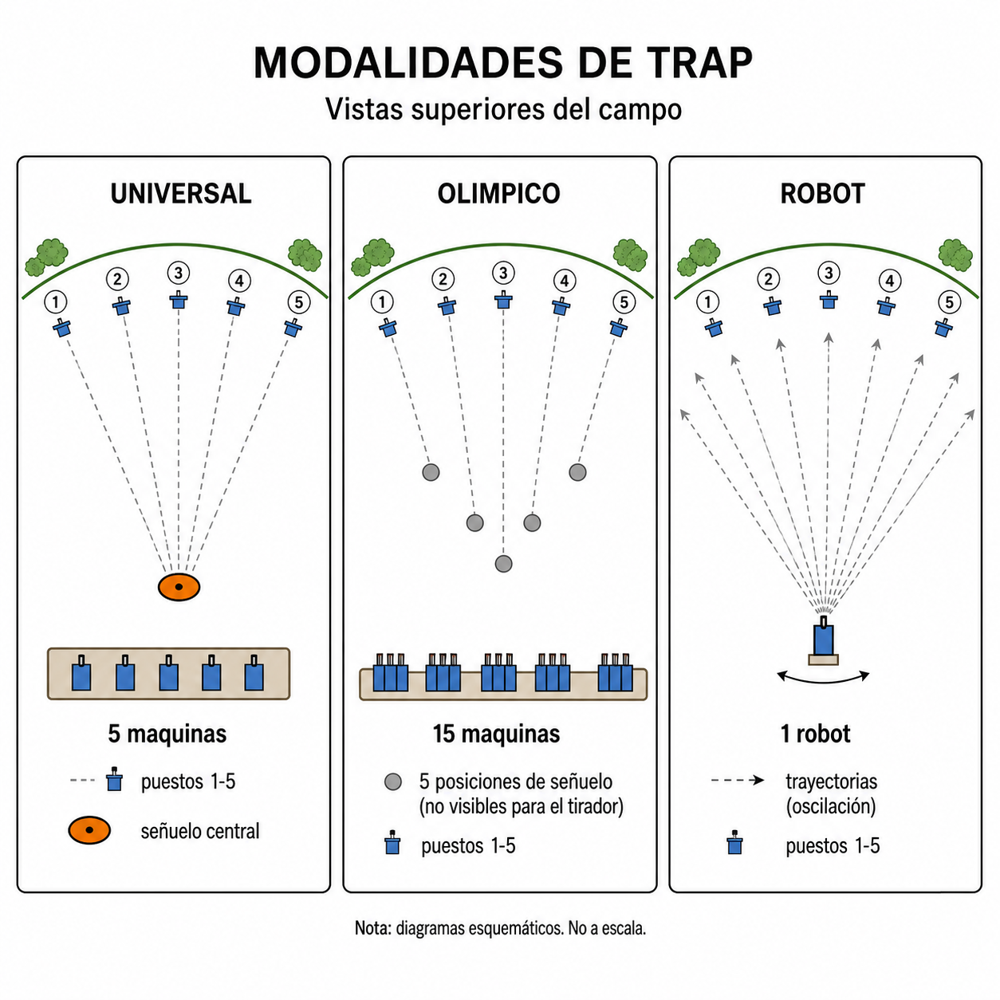
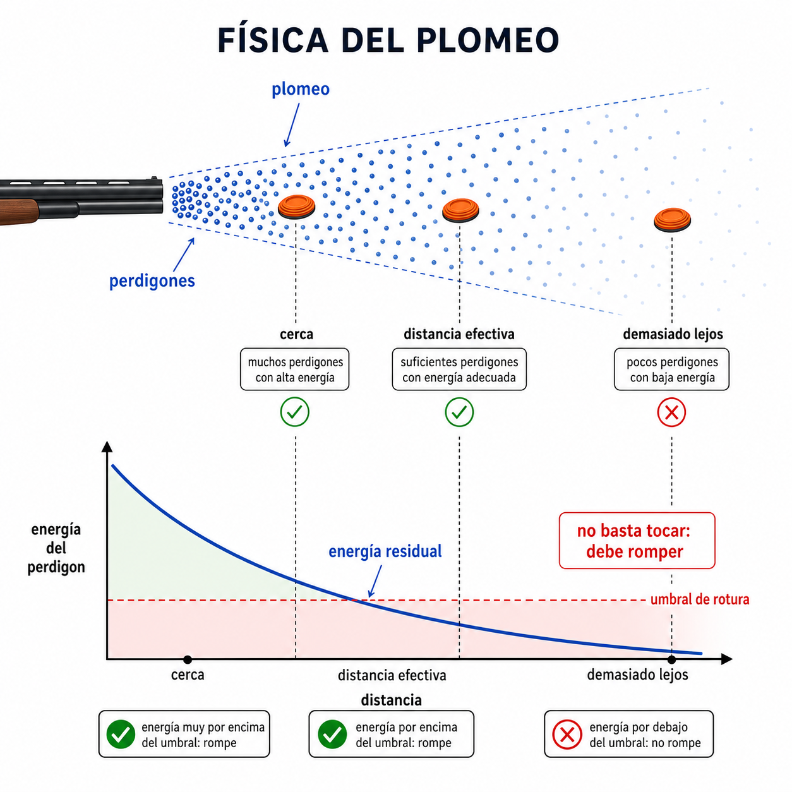

1. Fundamento del proyecto
El tiro al plato parece sencillo visto desde fuera: sale un plato naranja y hay que romperlo. En realidad el tirador no dispara al punto donde ve el plato, sino al sitio donde el plato estara cuando llegue la nube de perdigones.
El objetivo del simulador es hacer visible ese espacio invisible: la distancia al plato, el tiempo de vuelo del cartucho, el adelanto, la altura del disparo y la dispersion real del plomeo.


2. Reglas y referencias de tiro al plato
La aplicacion usa tres familias de escenarios: Universal, Foso Olimpico y Robot. Las dos primeras se aproximan a esquemas federativos; Robot permite estudiar maquinas oscilantes y tiradas populares que pueden estar fuera de norma.
- Universal: cinco maquinas en el foso, puestos 1 a 5 y platos que salen por la zona del señuelo central.
- Foso Olimpico: quince maquinas, agrupadas de tres en tres, con el señuelo activo alineado con el puesto.
- Robot: una maquina que oscila o recorre una secuencia. Puede configurarse compatible con ABT o con parametros extremos de feria.
En cada lanzamiento se calcula altura a 10 m, alcance, velocidad inicial y tiempo de vuelo. La banda superior del simulador muestra si el plato cumple la referencia elegida o si es un plato no normativo.

3. Por que falla un tirador
El fallo habitual no es solo punteria. Suele ser una combinacion de lectura tardia, mala estimacion de velocidad, adelanto insuficiente, exceso de altura o un plomeo que llega abierto y con poca energia.
- Retrasado: el plato ya se ha ido cuando llegan los perdigones.
- Adelantado: el tiro se escapa por delante del plato.
- Alto o bajo: la nube pasa por encima o por debajo del disco.
- Toque flojo: puede haber contacto geometrico, pero el perdigon llega sin energia suficiente para romper.
Por eso la aplicacion no solo pinta una nube bonita: simula perdigones individuales y evalua si alguno cruza el plato con energia residual suficiente.
4. Modelo fisico aplicado
El plato se integra como una trayectoria parabolica con gravedad reducida para aproximar el efecto aerodinamico del disco sin convertir el proyecto en un simulador CFD. El viento modifica lateralmente la trayectoria.
El cartucho se modela como un flujo de perdigones. Cada perdigon tiene direccion, pequeña variacion de velocidad, retardo de salida y una perdida de velocidad con la distancia. El simulador evalua el impacto en el tiempo, no con una probabilidad inventada.
E = 1/2 · m · v², masa aproximada de perdigon de plato tipo 7½ y un umbral minimo de rotura. Es una aproximacion pedagogica basada en tablas de balistica exterior, no una certificacion de cartucho concreto.

La velocidad del cartucho que se muestra en el control es una referencia inicial. En la vida real cada carga, tamaño de plomo, taco, choke, temperatura y cañon cambian el resultado. Aun asi, mientras se mantengan constantes los parametros, el simulador sirve para entrenar anticipacion y lectura relativa.
5. Como se usa la aplicacion
- Boton derecho del raton: pedir plato.
- Boton izquierdo: disparar primer y segundo tiro.
- El punto rojo es el punto de mira y donde dispara el usuario.
- El area amarilla es la recomendacion de adelanto. Puede ocultarse para entrenar sin ayuda.
- El area azul representa el patron estimado de plomeo sobre la linea de disparo.
- La correccion inferior indica si el tiro quedo adelantado, retrasado, alto o bajo.
- La camara lenta ayuda a analizar; a 1x el comportamiento temporal se acerca mas al tiro real.
Cuando el plato sale de la ventana util, el lance termina y se avanza de puesto. Si el plato cae al suelo sin romperse, la aplicacion conserva la correccion hasta el siguiente cambio de posicion.
6. Universal, Olimpico y Robot
Universal
Es el modo mas directo para entender la relacion entre señuelo, foso y plato. El señuelo central marca la zona de salida visible y las maquinas se representan bajo el suelo translúcido.
Foso Olimpico
La dificultad aumenta por los grupos de maquinas y por la lectura de angulos. El tirador rota por puestos y el señuelo activo cambia con el puesto.
Robot y ferias
En España muchas tiradas populares usan un robot o maquina oscilante. Puede estar configurado con muelle fuerte, inclinacion alta o angulos laterales extremos. Eso explica por que tiradores acostumbrados a esos platos pueden destacar en ferias aunque el ajuste no sea federativo.
Los controles Robot fuerza, Robot altura y Robot lateral permiten exagerar o suavizar esos comportamientos para comparar lo normativo con lo popular.
7. Fuentes bibliograficas y tecnicas
Estas fuentes sirven como base de normas, dimensiones, funcionamiento de maquinas y balistica. El simulador las usa como referencia pedagogica, no como homologacion oficial.
- ISSF - reglas y regulaciones oficiales: referencia para Foso Olimpico, platos, dimensiones y competicion.
- FITASC - Universal Trench: referencia federativa para Foso Universal.
- CPSA Booklet 7 - ABT y Wobble: referencia de Automatic Ball Trap y maquinas oscilantes.
- White Flyer - Shotgun Disciplines: resumen tecnico de disciplinas de plato y blancos.
- NRA - Shotshell Ballistics: tablas de balistica exterior de perdigones.
- Hunter-ed - Shot String: explicacion divulgativa del plomeo y la longitud de la nube de perdigones.
- Promatic Super Sporter Wobble: ejemplo comercial de robot/wobble programable.
- Laporte American Trap: referencia comercial de maquinas de trap.
- Atlas Tri-Axis Wobble: referencia comercial de maquina wobble con movimiento en varios ejes.
- Bowman ABT Base: referencia comercial de base ABT.
8. Licencia y atribucion
El proyecto se publica bajo licencia MIT. Al ser una pagina HTML, puede descargarse, copiarse, instalarse localmente o adaptarse, pero toda copia o derivado debe conservar la referencia al autor original, Roberto Canales Mora, y el enlace a www.robertocanales.com.
La atribucion forma parte del aviso de copyright y de permiso que acompaña al software.